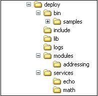

1.2. Installing Source Distribution
The following steps need to be followed to install and run Axis2/C using source distribution on Linux : -
- Extract the source tar package to a folder
- Set AXIS2C_HOME environment variable pointing to the location where you
want to install Axis2/C
- AXIS2C_HOME='/your_desired_path_to_axis2c_installation'
- export AXIS2C_HOME
Note : You will need to set AXIS2C_HOME only if you need to run Axis2/C samples. The reason is that the samples use AXIS2C_HOME to get the path to Axis2/C repository. To write your own services or clients this is not a requirement.
- Then go to the folder where you extracted the source
- cd /your_path_to_axis2c_source
- Build the source
- This can be done using the following command sequence in the
directory where you have extracted the source:
- ./configure
- make
- make install
- Use './configure --help' for possible command line options.
- Note :If you do not provide a --prefix configure option, the default installation would be /usr/local/axis2c directory.
- You may need to try Axis2/C with Guththila XML parser. You can do
that by providing --enable-guththila=yes option when configuring
- ./configure --enable-guththila=yes [other configuration options]
- make
- make install
- If you need to get the samples working, you also need to build the
samples.
To build the samples:- LD_LIBRARY_PATH=$LD_LIBRARY_PATH:/path_you_installed_axis2c/lib/
- export LD_LIBRARY_PATH
- cd samples
- ./configure --prefix=${AXIS2C_HOME} --with-axis2_util=${AXIS2C_HOME}/include --with-axiom=${AXIS2C_HOME}/include
- make
- make install
- Please run "./configure --help" in samples folder for more information on configure options.
- Note : If you do not provide a --prefix configure option, samples will by default be installed into "/usr/local/axis2c/bin/samples" directory.
- This can be done using the following command sequence in the
directory where you have extracted the source:
- Go to where you installed Axis2/C.
- Start simple axis server
- To start the simple axis server on port 9090 run the following
command lines
- cd /path_you_installed_axis2c/bin
- ./axis2_http_server
- To see the possible command line options run ./axis2_http_server -h
- Note : You may need to be logged in as a superuser to run the simple axis server, if you installed Axis2/C as super user.
- To start the simple axis server on port 9090 run the following
command lines
- Run the sample clients in a new shell using the following command lines
- cd /path_you_installed_axis2c/bin/samples
- to run client for echo service
- ./echo
- to run client for math service
- ./math
- To see the possible command line options for sample clients run them with '-h' option
2. Installing and Running on Microsoft Windows
This too can be done using either binary or source distributions. (You can download the two distributions here)
For both the binary and source distributions, you need to download Libxml2.
2. 1. Installing Binary Distribution
2.1.1. Requirements
- The binaries shipped with this version are compiled with Microsoft Visual Studio compiler (cl)
- You also need the following DLLs:
- libxml2.dll [http://www.xmlsoft.org - download the version >= libxml2-2.6.27.win32]
- iconv.dll [http://www.gnu.org/software/libiconv/ - download the version >= iconv-1.9.1.win32]
- zlib1.dll [http://www.gzip.org/zlib/ - download the version >= zlib-1.2.3.win32]
(Note: you can download Microsoft VSExpress2005 edition from the Microsoft Web site and install it to run these binaries)
2.1.2. Binaries in The Release
- Extract the binary distribution to a folder of your choice. (example: C:\axis2c)
- The C:\axis2c folder structure is as follows:
- bin - server and other executable
- bin\samples - client samples go here
- lib - library modules
- services - deployed services
- modules - deployed modules
- include - all include files of Axis2/C
- logs - system and client logs are written to this folder
- Copy libxml2.dll, iconv.dll and zlib1.dll downloaded to C:\axis2c\lib

The above folders contain the following files:
2.1.3. Running The Binaries
- First, you need to set a couple of environment variables before you can
run the server and samples.
- Set the variable AXIS2C_HOME to the deploy folder (C:\axis2c)
- Add the path to lib directory to the PATH variable (%AXIS2C_HOME%\lib)
- Now everything is set to run the server
- If the server is running successfully you should see the message "Started Simple Axis2 HTTP Server..."
- The log is by default created in %AXIS2C_HOME%\logs folder with the name axis2.log.
- (Note: You may provide command line options to change the default behavior. Use the command "axis2_http_server.exe -h" to learn about the usage)
- Now you can run any sample client located in %AXIS2C_HOME%\bin\samples\
- Example: C:\axis2c\bin\samples\> echo.exe
2. 2. Installing Source Distribution
2.2.1. Requirements
- The makefile shipped with this version needs Microsoft Visual Studio Compiler (cl) and nmake build tool.
- You also need
- Libxml2 [http://www.xmlsoft.org - download the version >= libxml2-2.6.27.win32]
- iconv [http://www.gnu.org/software/libiconv/ - download the version >= iconv-1.9.1.win32]
- zlib [http://www.gzip.org/zlib/ - download the version >= zlib-1.2.3.win32]
(Note: You can download Microsoft VSExpress2005 edition and Platform SDK from Microsoft Web site. You will need to add the path to Platform SDK Include and Lib folders to makefile)
2.2.3. Editing configure.in File
Please edit <source_distribution>\build\win32\configure.in file to include following information.
- The default paths for Libxml2 and iconv are specified in configure.in
- Example:If libxml2 is installed into C:\libxml2, edit configure.in file accordingly.
- You can either extract Libxml2 to this folder, in which case folder structure for C:\libxml2 should look like the following:
- You need to have zlib1.dll in a library path. You may copy this DLL to libxml2/lib.
- If you need the parser to use Guththila XML parser, ENABLE_GUTHTHILA option should be set to 1 in configure.in
- Example: ENABLE_GUTHTHILA = 1

Or extract to a location of your choice and edit the configure.in accordingly.
2.2.4. Compiling The Source
The following steps will take you through the source compilation
- Extract the source distribution to a folder of your choice. (Example: C:\axis2c)
- Edit configure.in file as explained in the section 2.2.3
- Open a DOS shell
- cd C:\axis2c\build\win32
- to access .Net tools, run
- C:\axis2c\build\win32> vcvars32.bat
(Note: You may need to set the PATH environment variable to vcvars32.bat if Windows complaints that it cannot find this batch file. This file is located in <your MS Visual Studio install Directory>\VC\bin directory.)
- To build the system and create the binary files in a directory named deploy under build
directory:
- C:\axis2c\build\win32>nmake install
- The deploy folder structure is as follows:
- bin - server and other executable
- bin\samples - client samples
- lib - library modules
- services - deployed services
- modules - deployed modules
- include - all include files of Axis2 C
- logs - system and client logs are written to this folder

The above folders contain the following files:
2.2.5. Running The Binaries
- You need to set couple of environment variables before you can run the
server and samples.
- Set the variable AXIS2C_HOME to the deploy folder (C:\axis2c\build\deploy)
- Add the path to lib directory to PATH variable (%AXIS2C_HOME%\lib)
- Copy libxml2.dll, iconv.dll and zlib1.dll to Axis2/C lib folder (%AXIS2C_HOME%\lib)
- Now run the server - C:\axis2c\build\deploy\bin> axis2_http_server.exe
- If server is running successfully you should see the message "Started Simple Axis2 HTTP Server..."
- The log is by default created under %AXIS2C_HOME%\logs folder with the name axis2.log.
- (Note: you may provide command line options to change the default behavior. Use the command "axis2_http_server.exe -h" to learn about the usage)
- Now you can run any sample client deployed under
%AXIS2C_HOME%\bin\samples\
- Example: C:\axis2c\build\deploy\bin\samples> echo.exe